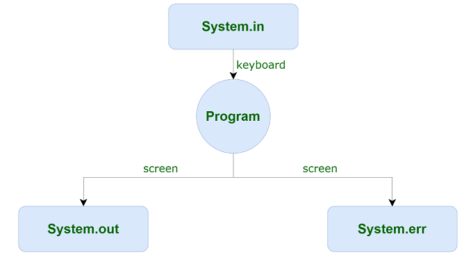
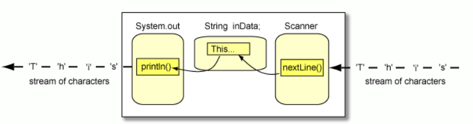

💾 Entrada y salida de información por consola en Java
Java ofrece clases integradas para realizar operaciones de entrada (input) y salida (output) a través de la consola. El tipo más simple de interfaz de usuario es la línea de comandos, donde la entrada se recibe desde el teclado y la salida se muestra en pantalla.
En esta sección presentamos las clases System y Scanner que se utilizan para imprimir la salida y leer la entrada de un programa.

📤 Salida de información
En Java, la salida por consola se realiza principalmente con el objeto System.out.
System.out.println("Hola mundo"); // imprime con salto de línea
System.out.print("Hola "); // imprime sin salto de línea
System.out.printf("Número: %d", 10); // imprime con formato

🔹 Diferencias entre flujos de salida
- System.out → flujo estándar de salida (mensajes normales).
- System.err → flujo de error (mensajes de error).
Ejemplo:
System.out.println("Ejecución correcta");
System.err.println("Error: archivo no encontrado");
🧾 Salida con formato en Java (printf / format)
Java permite formatear textos y números usando plantillas de formato similares a C.
Las dos formas más habituales:
System.out.printf("Plantilla", args...); // imprime directamente
String s = String.format("Plantilla", args...); // devuelve el String formateado
//Ejemplos:
System.out.printf("Hola %s, tienes %d años%n", "Ana", 27);
//Hola Ana, tienes 27 años
// ^^^^^^ 1º arg → "Ana" (%s)
// ^^^ 2º arg → 27 (%d)
String s = String.format("Precio: %.2f€", 12.5);
//"Precio: 12.50€"
// ^^^^ 1º arg → 12.5 (%.2f → 2 decimales)
🔠 Conversores más comunes
| Conversión | Significado | Ejemplo |
|---|---|---|
%d |
Entero sin decimales | System.out.printf("%d", 42) → 42 |
%o |
Octal | "%o" |
%x / %X |
Hexadecimal | "%x" → 2a, "%X" → 2A |
%f |
Coma flotante (fixed) | "%f" → 3.141593 |
%e / %E |
Notación científica | "%e" → 3.141593e+00 |
%g / %G |
Usa %f o %e (el más compacto) |
"%g" |
%s |
Cadena (toString()) |
"%s" |
%c |
Carácter | "%c" |
%b |
Booleano | "%b" (true/false) |
%n |
Salto de línea portátil | evita usar \n |
%% |
Porcentaje literal | imprime % |
💡 Para
BigDecimalyBigInteger,%f,%d,%sfuncionan según corresponda.
🚩 Banderas útiles
| Bandera | Efecto | Ejemplo | Resultado |
|---|---|---|---|
- |
Alinea a la izquierda | "%-10s" con "OK" |
OK |
0 |
Rellena con ceros (numéricos) | "%05d" con 42 |
00042 |
+ |
Muestra siempre el signo | "%+d" con 42 |
+42 |
| (espacio) | Espacio si positivo | "% d" con 42 |
42 |
, |
Separador de miles (según Locale) | "%,d" con 1000000 |
1,000,000 (en Locale.US) |
( |
Negativos entre paréntesis | "%(d" con -42 |
(42) |
Ancho y precisión (para %f):
"%8.2f"→ ancho mínimo 8, 2 decimales. 8 → el resultado ocupará al menos 8 caracteres (si es más largo, se expande; si es más corto, se rellena con espacios por defecto).System.out.printf("|%8.2f|%n", 3.14); // | 3.14| (4 espacios + 4 chars) System.out.printf("|%8.2f|%n", -3.14); // | -3.14| (3 espacios + 5 chars) System.out.printf("|%8.2f|%n", 12345.67);// |12345.67| (ya ocupa 8, no hay relleno) System.out.printf("|%-8.2f|%n", 3.14); // |3.14 | System.out.printf("|%08.2f|%n", 3.14); // |00003.14| System.out.printf("|%08.2f|%n", -3.14); // |-0003.14|"% .3f"→ espacio para positivo, 3 decimales.
Ejemplos:
System.out.printf("|%10s|%10s|%n", "Nombre", "Puntos"); // ancho campos
//| Nombre| Puntos|
System.out.printf("|%-10s|%010d|%n", "Ana", 42);
//|Ana |0000000042|
System.out.printf("%+8.2f%n", 3.14159); // +3.14
System.out.printf("%(,12.2f%n", -1234567.89); // (1,234,567.89) con Locale.US
🌍 Locale (puntos, comas y separadores)
El formato depende del Locale (p. ej., España usa coma decimal). Puedes fijarlo explícitamente:
import java.util.Locale;
System.out.printf(Locale.US, "%,.2f%n", 1234.5); // 1,234.50
System.out.printf(new Locale("es","ES"), "%,.2f%n", 1234.5); // 1.234,50
Si necesitas reutilizar, usa
String.format(Locale, ...).
📥 Entrada de información con java.util.Scanner
Para leer datos desde teclado se utiliza la clase Scanner (paquete java.util).
Scanner sc = new Scanner(System.in);
import java.util.Scanner;
public class Main {
public static void main(String[] args) {
Scanner sc = new Scanner(System.in);
System.out.print("Introduce tu nombre: ");
String nombre = sc.nextLine();
System.out.print("Introduce tu edad: ");
int edad = sc.nextInt();
System.out.println("Hola " + nombre + ", tienes " + edad + " años.");
}
}
🔹 Métodos comunes de Scanner
next()→ lee el siguiente token (palabra) hasta el delimitador (por defecto, cualquier espacio en blanco).nextLine()→ lee toda la línea completa hasta el salto de línea (incluye espacios).nextInt()→ lee un número entero.nextDouble()→ lee un número decimal.nextBoolean()→ lee un valor lógico (true/false).nextLong,nextFloat,nextByte,nextShort, etc.
⚠️ Cuidado: si combinas nextInt() o nextDouble() con nextLine(), puede quedar un salto de línea pendiente. A veces es necesario añadir un sc.nextLine(); extra para limpiar el buffer.
🛠️ Ejemplo práctico
import java.util.Scanner;
public class Calculadora {
public static void main(String[] args) {
Scanner sc = new Scanner(System.in);
System.out.print("Introduce el primer número: ");
double a = sc.nextDouble();
System.out.print("Introduce el segundo número: ");
double b = sc.nextDouble();
double suma = a + b;
System.out.println("La suma es: " + suma);
}
}
🧩 Buenas prácticas
- Cerrar el objeto
Scanneral finalizar consc.close();. - Usar
System.errpara errores,System.outpara resultados normales. - Nombrar claramente los mensajes para guiar al usuario.
- Evitar literales mágicos en los mensajes, usar constantes si son repetidos.
📋 Resumen
System.outse usa para salida estándar.System.errse usa para mensajes de error.System.inpermite entrada desde teclado (generalmente conScanner).printf/formatfacilitan salida con formato (ancho, precisión, banderas, Locale).Scannerofrece métodos para leer distintos tipos de datos (nextInt,nextDouble,nextLine, etc.).- Es la base para crear programas interactivos en consola antes de usar interfaces gráficas.